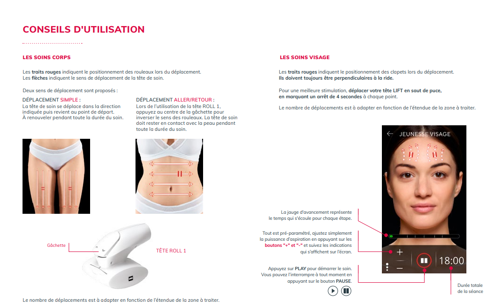
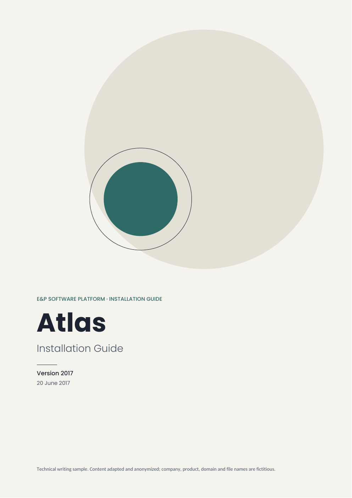
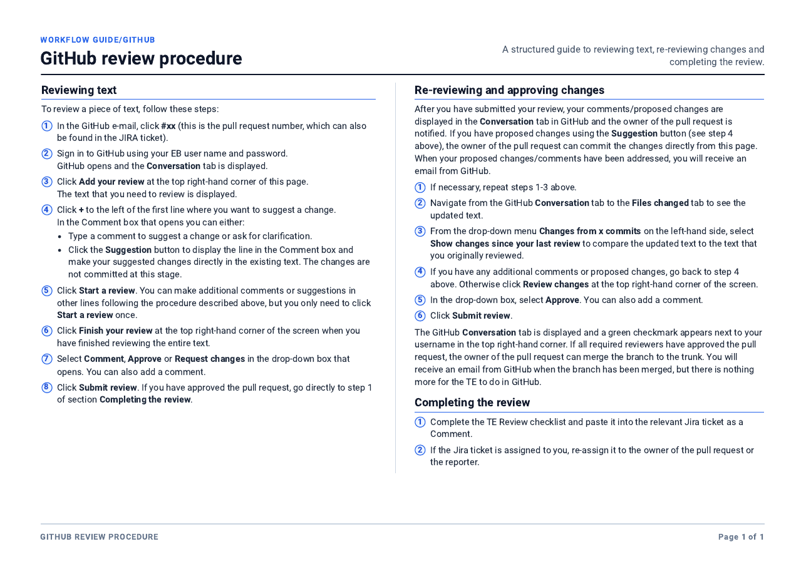
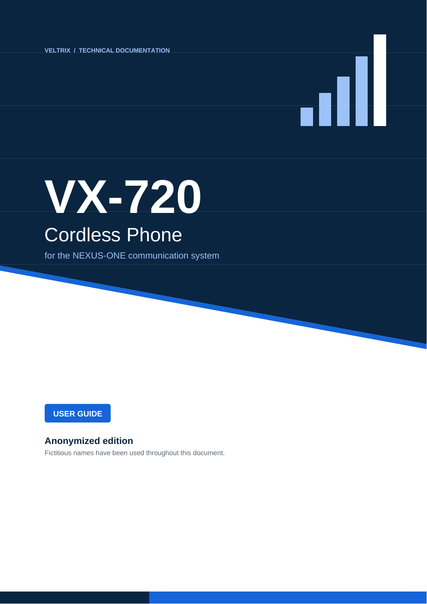

De vrais projets,
et la réflexion qui les sous-tend.
Des exemples de projets réels, anonymisés si nécessaire, et de courts exemples de mon approche de la structure, du style et de la migration. Les documents PDF sont en anglais.
Usage Guide — Body & Face Treatment Device
Un dépliant fourni avec un appareil de soin grand public, pour que les utilisateurs le manipulent seuls.

Défi, rôle, approche, résultat
- Défi : Les utilisateurs devaient maîtriser les gestes de soin, les schémas de mouvement et les commandes à l’écran d’un appareil avec applicateurs corps et visage interchangeables, sans formateur.
- Rôle : Rédacteur du guide source en français, du lancement sur site aux dernières corrections. La localisation par le client n’entrait pas dans mon périmètre.
- Approche : J’ai appris l’appareil en l’utilisant moi-même, confirmé les détails techniques avec l’ingénieur et affiné le guide au fil des cycles de relecture du client.
- Résultat : Le guide a été imprimé sous forme de dépliant et inclus dans l’emballage du produit, afin que les utilisateurs puissent utiliser l’appareil seuls.
Installation Guide
Un seul guide d’installation, de déploiement et de licences pour deux publics : utilisateurs finaux et administrateurs. Il couvre les prérequis, l’installation sur poste et en ligne de commande, le déploiement réseau, la configuration et le dépannage.

Défi, rôle, approche, résultat
- Défi : Des utilisateurs finaux qui installent seuls et des administrateurs qui déploient à grande échelle avaient besoin d’un guide fiable couvrant l’installation, les licences, la configuration et le dépannage.
- Rôle : Rédacteur du guide complet, du cadrage à la version étiquetée.
- Approche : Je l’ai structuré par tâche (planifier, installer, licencier, configurer, dépanner) et j’ai recueilli les problèmes connus auprès des développeurs, des ingénieurs support et des administrateurs de licences. J’ai testé chaque procédure sur une machine vierge et corrigé l’ordre des étapes, les prérequis et les libellés d’interface. J’ai utilisé des étapes numérotées, des alertes Note/Attention/Avertissement standardisées, des tableaux et des blocs de code, et relu les modifications avec les experts métier et mes pairs via des merge requests par modification.
- Résultat : Après plusieurs cycles de relecture et un contrôle de cohérence, le guide permet aux utilisateurs d’installer seuls et aux administrateurs de déployer à grande échelle.
GitHub Review Procedure
Une procédure interne qui guide pas à pas les relecteurs : relire les modifications de documentation dans GitHub, soumettre commentaires et suggestions, relire le contenu mis à jour et approuver les pull requests.

Défi, rôle, approche, résultat
- Défi : Les relecteurs de l’équipe avaient besoin d’une façon cohérente de relire les modifications de documentation dans GitHub, de soumettre commentaires et suggestions, et d’approuver les pull requests.
- Rôle : J’ai créé et maintenu cette procédure pour l’équipe Documentation technique d’Elektrobit. C’est un document interne, développé spécifiquement pour Elektrobit.
- Approche : Je l’ai rédigée en étapes numérotées, par tâche, qui accompagnent le relecteur du lien de la pull request dans l’e-mail GitHub jusqu’à l’approbation. Les étapes couvrent les commentaires, les modifications proposées, la relecture du contenu mis à jour avec « Show changes since your last review » et la checklist finale dans Jira.
- Résultat : Un guide d’une page, pas à pas, qui soutient des workflows de relecture cohérents au sein de l’équipe.
VX-720 Cordless Phone User Guide
Un guide utilisateur complet pour un téléphone sans fil utilisé avec un système de communication d’entreprise : fonctions, installation et dépannage.

Défi, rôle, approche, résultat
- Défi : En 2008, j’ai contribué à l’un de mes premiers projets de documentation technique pour un grand opérateur télécoms suédois. Il s’agissait de documenter un téléphone sans fil et de rédiger un guide utilisateur complet dans un domaine technique relativement nouveau pour moi.
- Rôle : J’étais responsable de la rédaction du guide utilisateur complet : fonctions du téléphone, installation et dépannage.
- Approche : J’ai travaillé en étroite collaboration avec des experts métier (SME) pour comprendre le produit et vérifier les informations techniques. J’ai testé moi-même les fonctions du téléphone pour acquérir une expérience directe et garantir des instructions exactes et pratiques. J’ai aussi sollicité les conseils et retours de rédacteurs techniques plus expérimentés.
- Résultat : J’ai livré un guide complet, orienté utilisateur, couvrant les principales fonctions, les procédures d’installation et le dépannage. Ce projet a renforcé mes compétences en rédaction technique et m’a apporté une précieuse expérience en documentation télécoms, tout en façonnant mon approche d’une documentation utilisateur claire et fiable.
System Administration Guide
Un guide fictif pour des administrateurs qui configurent une plateforme d’entreprise. Il montre une structure par tâche, des prérequis, des procédures claires et des résultats attendus.

Ce que cet exemple démontre
- Des titres de tâches et des objectifs utilisateur clairs
- Un enchaînement logique et des prérequis
- Des instructions concises et des résultats attendus
- Une terminologie cohérente
- Un contenu conçu pour être parcouru plutôt que lu linéairement
From legacy content to DITA
Une étude de cas fictive sur la façon dont j’analyserais, modéliserais et migrerais un grand ensemble de documents non structurés vers un contenu réutilisable par topics.

Ce que cet exemple démontre
- Analyse du contenu avant le choix de l’outil
- Architecture de l’information par topics
- Réutilisation et gouvernance
- Stratégie de migration et mise en œuvre progressive
- La documentation traitée comme un système, pas comme un tas de fichiers
Documentation Style Guide
Un guide interne fictif qui fixe des conventions cohérentes de terminologie, de style et de procédures pour les rédacteurs et les ingénieurs.

Ce que cet exemple démontre
- Des règles pratiques plutôt que des principes abstraits
- Gestion de la terminologie
- Des exemples que les rédacteurs peuvent appliquer immédiatement
- Cohérence entre équipes et documents
Une grande partie de mon travail est sous NDA. Alors je montre la méthode.
Les exemples sont anonymisés ou recréés. Dans chaque cas, je montre le public, mon rôle, le processus et le résultat, pour que vous puissiez juger ma façon de travailler.